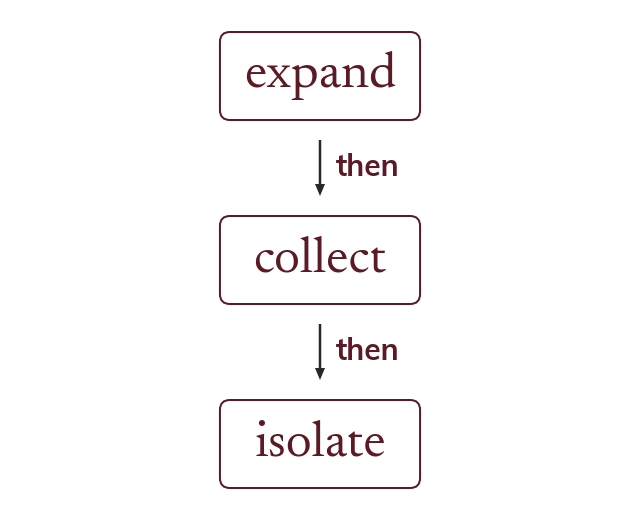

The method never changes
Every equation uses the same three steps, in order. Expand every bracket, collect the unknown on one side, then isolate it.
however complicated an equation looks, the same three steps apply in order: expand every bracket, collect the unknown onto one side, then apply inverse operations to isolate it.